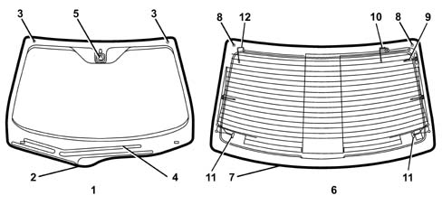

WINDSCREEN AND REARSCREEN
- Path
- Descriptions > 70 FITTINGS > 7035 BODYSHELL WINDOWS > WINDSCREEN AND REARSCREEN
- Kind
- system description
- Applies to
- all engines; all production periods
- Interactive page
- https://sloeber94.github.io/elrnDB-lThss/en/#/841005819
Applies to: all engines; all production periods
CONSTRUCTION SPECIFICATIONS
The windscreen and the rearscreen are bonded to the bodyshell and, as structural elements, contribute to its strength.
The windscreen is the stratified type and consists of two layers of glass bonded to one another by a film. If the windscreen breaks even though it is cracked it maintains its position and sufficient visibility.
The windscreen has centering pins to ensure correct matching with the window housing. It also has a heating resistance in the area where the windscreen wiper blades are parked and in the area of the interior rear view mirror for the rain/dusk sensor for the automatic activation of the windscreen wiper and the lights.
The tempered type rearscreen is produced by means of a thermal process during which the surface of the glass is subjected to strong compression. If the rearscreen breaks it shatters into small pieces.
The rearscreen has two centering pins which have the same function as those for the windscreen.
COMPOSITION

- 1 - Windscreen
- 2 - Perimeter trim
- 3 - Centering pins
- 4 - Windscreen wiper blade heating resistance
- 5 - Rain/dusk sensor
- 6 - Rearscreen
- 7 - Perimeter trim
- 8 - Centering pins
- 9 - AM aerial
- 10 - FM aerial
- 11 - TV aerial
- 12 - RF aerial
Windscreen
The shape of the lower part of the windscreen is asymmetrical to allow the windscreen wiper blades to park in a position below the bonnet lid. This solution means that the windscreen wiper blades cannot be seen from either the inside or the outside of the vehicle and involves:
- the elimination of a visual obstacle with advantages in terms of aesthetics;
- the elimination of wind resistance at high speeds.
The windscreen surround trim is equipped with special ducts for the rain to flow through which prevent the fouling of the side windows and the windscreen if it is raining.
Rearscreen
The rearscreen surround trim is fitted with similar ducts for the rain to flow through as those on the windscreen surround trim.
In addition to the demisting resistances there are also radio and TV reception aerials on the rearscreen.